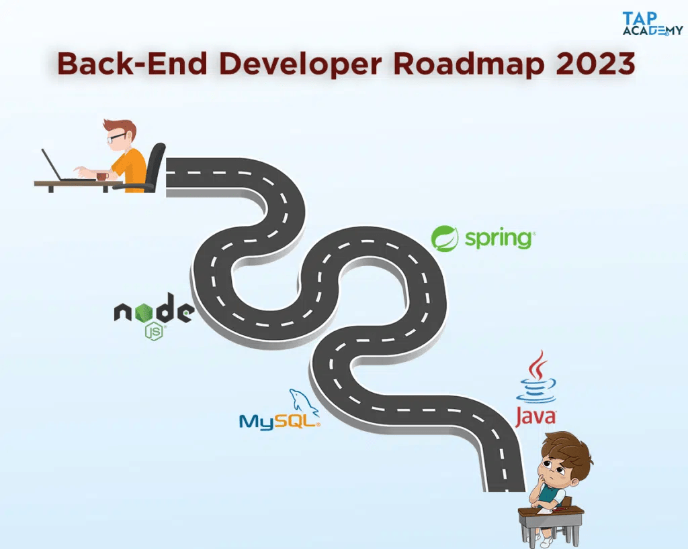

806987321
806987321 


806987321
 HOME COURSES STUDENT REVIEWS BLOGS PLACEMENTS CONTACT US TRYFORFREE
HOME COURSES STUDENT REVIEWS BLOGS PLACEMENTS CONTACT US TRYFORFREE
Our complete online training has made students learn to code anytime anywhere & got placed in various Companies. Here are our few students placed at various companies :

Backend Developer Roadmap In 2023
Clarity, goal-setting, time management, personalizing your learning experience, and professional advancement all depend on establishing a plan to becoming a backend developer. Here is a 7 step backend developer roadmap, go through these steps and achieve your goal to be the expert backend developer:
Step 1: Learn Backend Development Technologies
A key step in becoming a backend developer is learning programming languages.
Step 2: Understanding Databases
A crucial 2nd step of backend developer roadmap is understanding databases. Databases are used to systematically store, arrange, and retrieve data. The following are some significant databases to learn:
MySQL: Web development frequently uses MySQL, an open-source relational database management system (RDBMS). It is renowned for its dependability, adaptability, and usability. Several web applications, such as content management systems (CMS) and e-commerce platforms, employ MySQL. For instance, MySQL is used by WordPress, one of the most widely used CMS platforms, to handle its databases.
PostgreSQL: Another well-liked open-source RDBMS that is renowned for its dependability and toughness is PostgreSQL. It is frequently employed when creating online applications for industries like banking and finance that demand high standards of data integrity and security.
MongoDB: Built for scalability and flexibility, MongoDB is a NoSQL document-oriented database. It is employed for managing and storing unstructured data, including user-generated content, product reviews, and social networking posts. MongoDB is frequently used in web applications, including gaming and mobile ones, that need high levels of scalability and performance.
Step 3: Understand Web Servers
Being a backend developer also requires understanding web servers. Software programs known as web servers provide a foundation for hosting and serving online applications.
Almost 50% of all websites utilize the Apache web server, a well-liked open-source web server. It is renowned for its consistency, safety, and adaptability. Web applications like content management systems (CMS) and e-commerce platforms employ Apache.
Another well-liked open-source web server, Nginx, is renowned for its outstanding performance, scalability, and speed. It is frequently employed for load balancing, reverse proxying, and serving static and dynamic information.
known More